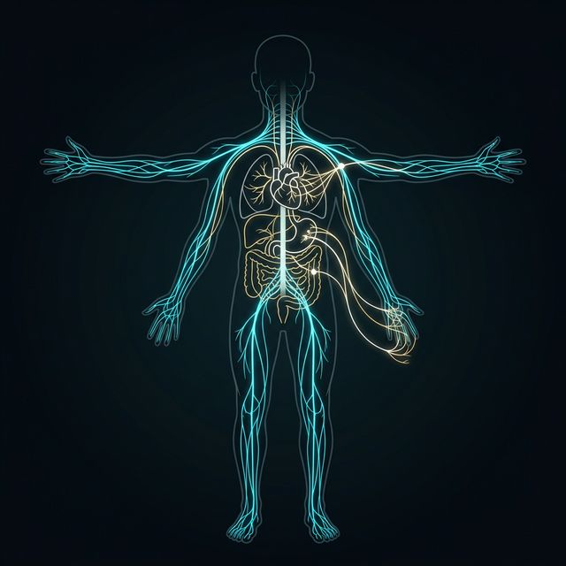

Somatik Bölüm (İstemli Kontrol)
Çizgili kasları ve bilinçli duyusal algıyı yöneten istemsiz dışı veri yoludur. Somatosensori ve motor kontrolü birleştirir.

Savaş veya Kaç (Fight or Flight). Enerji harcaması, hızlı metabolizma.
Dinlen ve Sindir (Rest and Digest). Enerji depolama, metabolik denge.